Equipo de Alquiler · Maquinaria Pesada
Equipo de Alquiler · Maquinaria Pesada
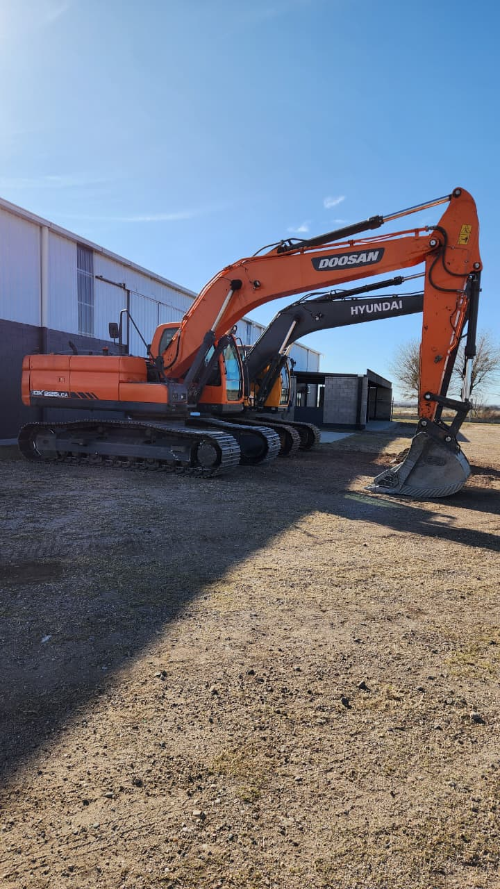
Excavadora Hidráulica de Orugas
OrugasExcavadora hidráulica sobre orugas de alta productividad, diseñada para aplicaciones de excavación, carga y demolición. Equipada con motor Doosan de bajo consumo y alto torque.
Excavación de zanjas, carga de material, demolición ligera, nivelación de terreno, canteras y construcción vial.
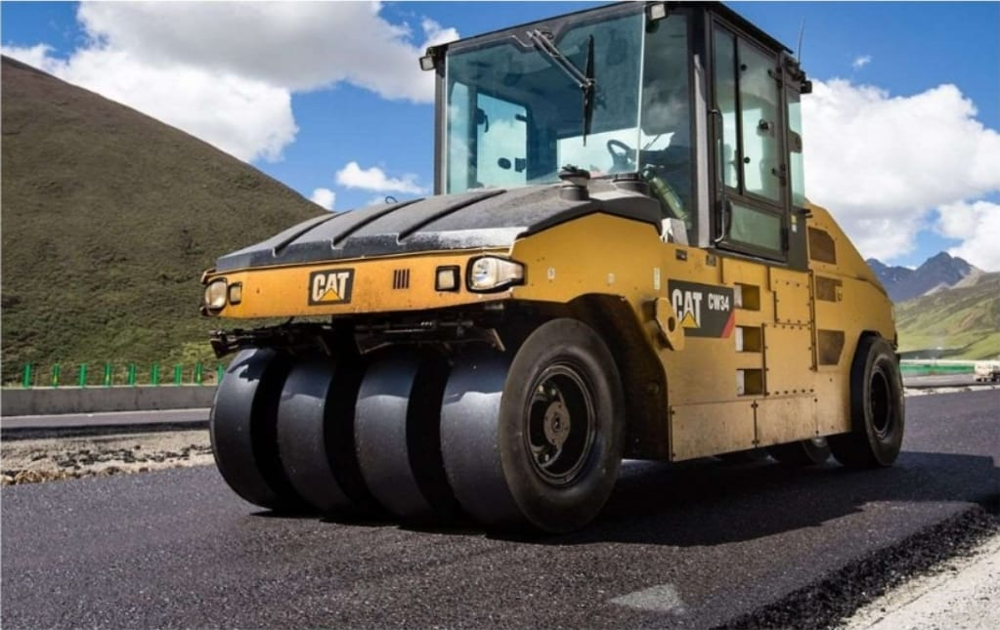
Compactador de Ruedas de Acero
CompactaciónCompactador de ruedas de acero con lastre configurable, diseñado para compactación de suelos granulares y mezclas asfálticas.
Compactación de capas granulares, terminado de superficies asfálticas, bases de carreteras y zonas industriales.
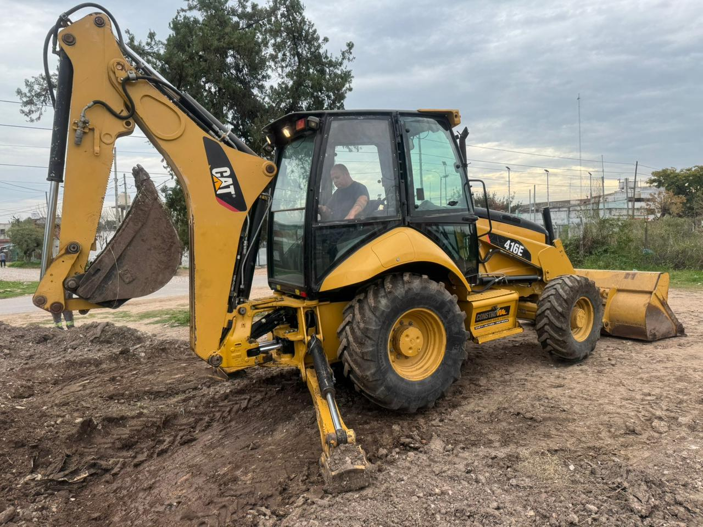
Retroexcavadora Cargadora
MultiusosRetroexcavadora cargadora versátil, combina capacidad de carga frontal con brazo excavador trasero. Ideal para obras urbanas.
Zanjeo, carga de material, nivelación ligera, extendido de material y mantenimiento vial.
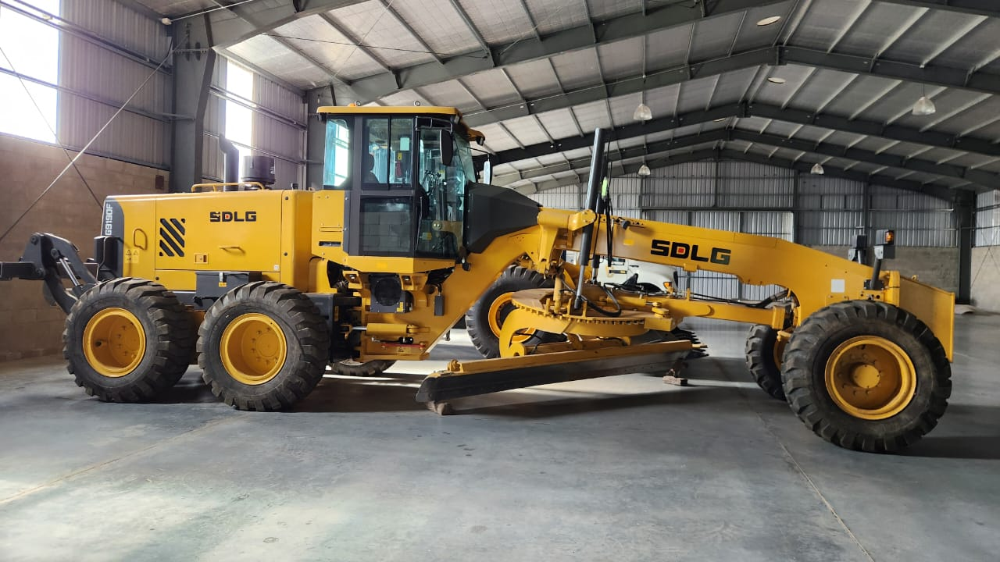
Excavadora de Orugas
OrugasExcavadora sobre orugas de tamaño medio, robusta y confiable para operaciones de excavación demanding.
Excavación general, carga de camiones, demoliciones, movimiento de tierras y preparación de plataformas.
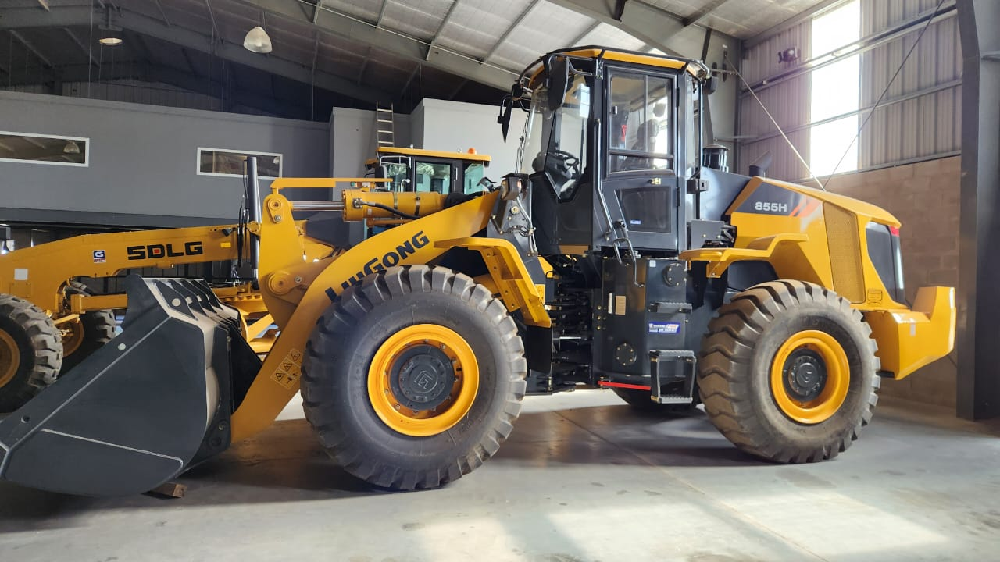
Cargadora de Ruedas
CargaCargadora frontal de alta capacidad, ideal para carga de material suelto y alimentación de plantas trituradoras.
Carga de material granular, alimentación de trituradoras, acopio de materiales y carga de camiones.
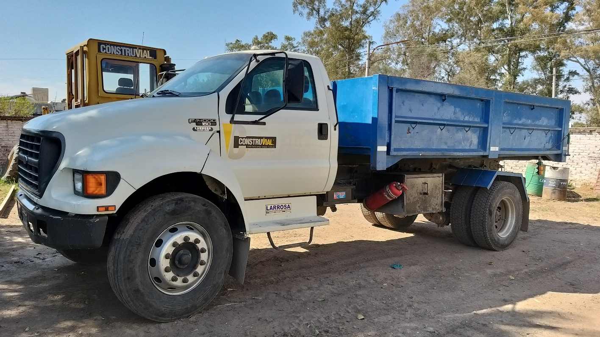
Camión Volquete / Dúmper
TransporteCamión volquete de gran capacidad para transporte de material suelto en obras de construcción y minería.
Transporte de tierra, grava, arena, escombros y material pétreo dentro de la obra.
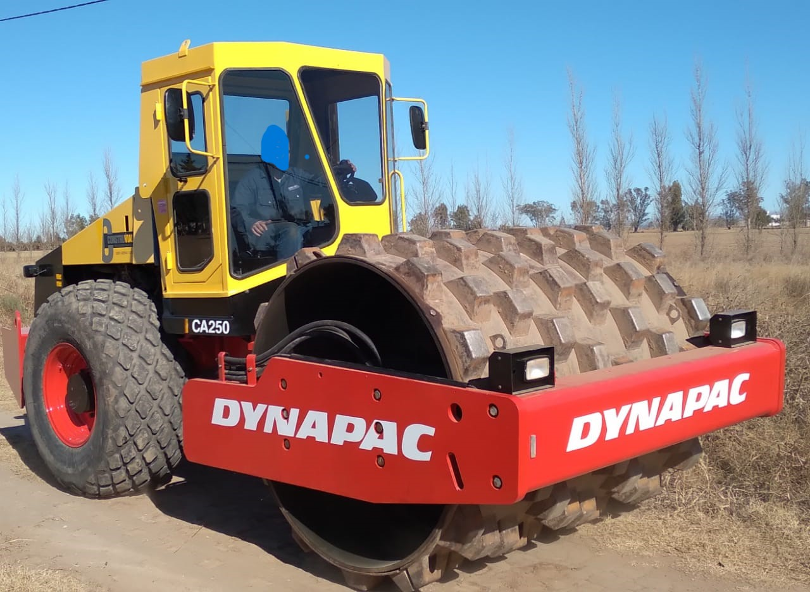
Compactador de Suelo - Pata de Cabra
CompactaciónCompactador vibratorio con rodillo tipo "pata de cabra" para compactación de suelos cohesivos en profundidad.
Compactación de presas, terraplenes, bases de carreteras y zanjas.
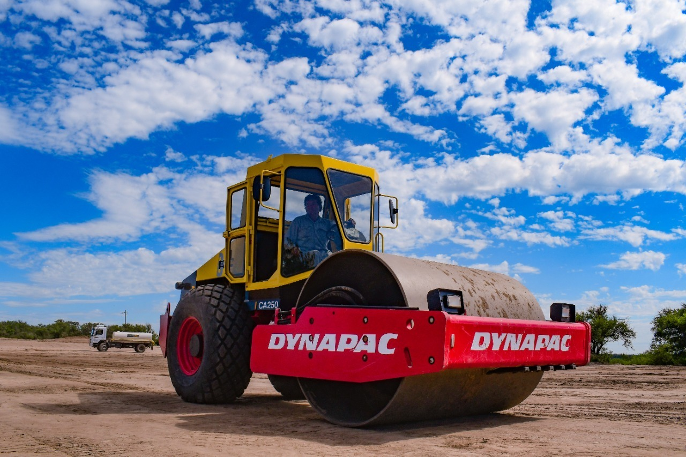
Compactador de Suelo Liso
CompactaciónCompactador vibratorio de rodillo liso para compactación de suelos granulares y acabados superficiales.
Compactación de bases granulares, capas asfálticas, terraplenes y mantenimiento vial.
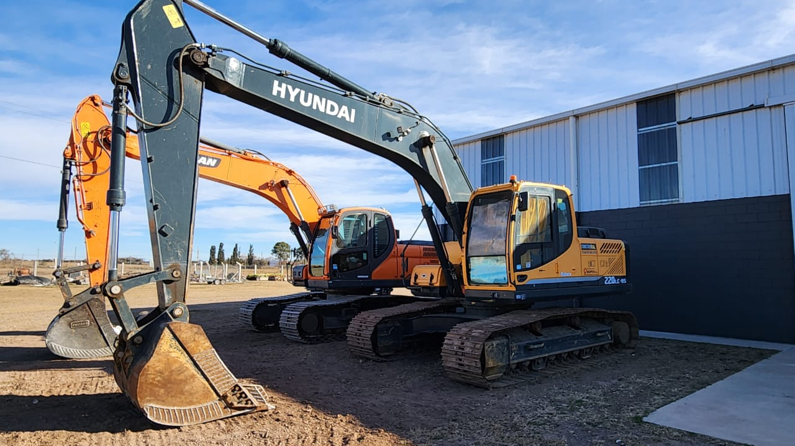
Excavadora Hidráulica de Oruga
OrugasExcavadora hidráulica sobre orugas de la serie 9, combina alta productividad con bajo consumo.
Excavación, carga, demolición ligera, dragado, nivelación y trabajos en canteras.
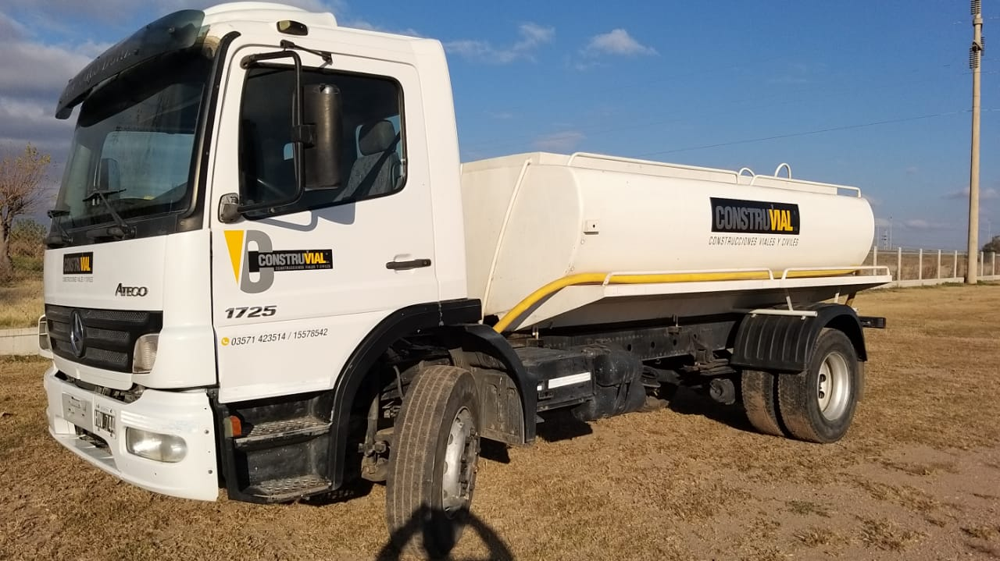
Camión Cisterna
TransporteCamión cisterna para transporte de agua, hormigón fluido u otros líquidos en obras.
Transporte y distribución de agua, riego de caminos y alimentación de hormigoneras.
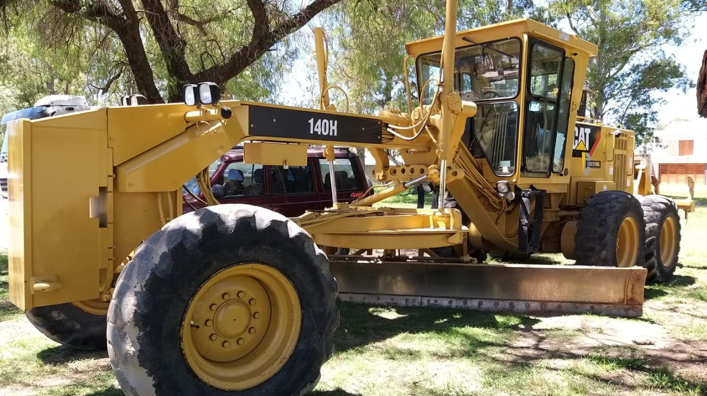
Motoniveladora
NivelaciónMotoniveladora de alto rendimiento para nivelación, perfilado y acabado de superficies.
Nivelación de terrenos, perfilado de carreteras, mantenimiento vial y extendido de materiales.
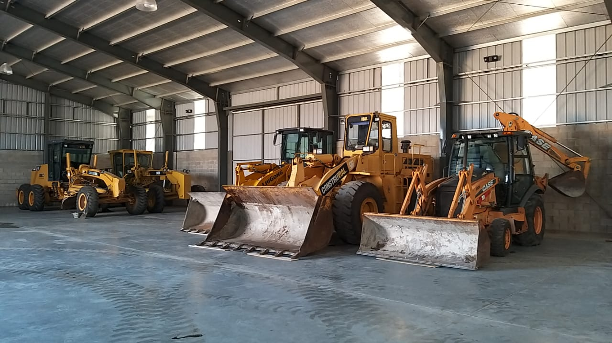
Grupo de Maquinaria Pesada
VariosFlota completa de maquinaria pesada para proyectos de construcción de medium a gran escala.
Movimiento de tierras, compactación, excavación, carga, transporte y acabados.
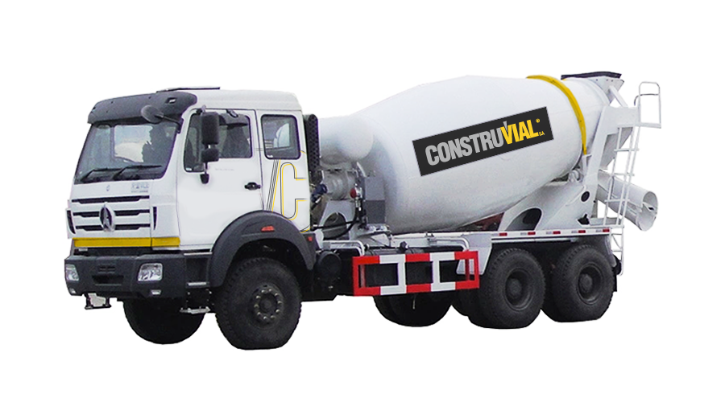
Camión Mixer 6 m³ / 7 m³
TransporteCamión mixer sobre chassis Mercedes-Benz Axor para transporte y entrega de hormigón fresco en obra.
Transporte de hormigón fresco para columnas, muros, losas, cimentaciones y pilotes.